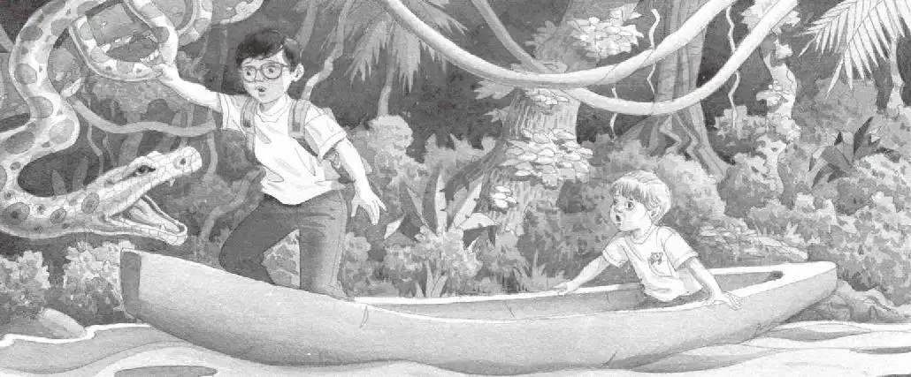

“吱吱。”
安妮拍了拍口袋里的小老鼠。
“没关系，花生米。我们在河里，蚂蚁过不来，我们很安全。”她说。
“蚂蚁应该伤害不到我们了，”杰克说，“可是，这条独木舟在往哪儿走呢？”
杰克和安妮盯着河水。水面上方，挂在树枝上的藤蔓和苔藓植物低垂下来。
“我们最好在书里查一查。”杰克说。他把热带雨林书从背包里掏出来，迅速地翻看着。
很快，他找到了一幅河流的图片。他读道：
亚马孙河长达六千多千米，发源于秘鲁山区，流经巴西，汇入大西洋。亚马孙河流域拥有全世界一半以上的热带雨林。
杰克看着安妮。“我们在亚马孙河上，”他说，“它有六千多千米长呢！”
“哇！”安妮轻声叹道。她用一只手撩了撩河水。
“我要记一些笔记——”杰克说。他从背包里掏出笔记本，写道：
“杰克，快看那些漂亮的鱼，还长着牙齿呢。”安妮说。
“什么？”正在写字的杰克抬起头来问道。
安妮指着几条在独木舟附近游动的蓝色的鱼。鱼的肚子是红色的，嘴里的牙齿像刀一样锋利。
“当心！”杰克喊道，“这些不是漂亮的鱼，是水虎鱼！它们什么都吃！还会吃人呢！”
“哎呀！”安妮吓得轻叫了一声。
“我们最好回岸上去。”杰克说着把书放回背包里。
“怎么回去？”安妮说，“我们现在不能下水，独木舟上又没有桨。”
杰克努力让自己保持平静。“我们需要想个办法。”他说。杰克出神地盯着河水。独木舟很快就会从几根藤蔓下漂过。
“我等会儿会抓住一根藤蔓，”杰克说，“我们拉着它就能上岸了。”
“好主意。”安妮说。

独木舟在藤蔓下轻巧地滑过，杰克站了起来。
独木舟开始摇晃，杰克差点儿摔了出去。
“让独木舟保持平衡。”杰克喊道。
安妮把身体压向一边。杰克伸手去够藤蔓——没够到！
独木舟又从另外几根藤蔓下漂过。
杰克又伸手去抓。这次抓到了！
藤蔓冷冰冰的，上面还有鳞。它在扭动，在挣扎！
“啊啊！”杰克尖叫一声，身子往后一仰，跌进了独木舟。
这根藤蔓是活的！
原来是一条很长的绿色的蛇！
蛇从树上滑下来，扑通一声跌进水中，游走了。
“哦，天哪。”杰克说。
他和安妮神色惊恐地看着对方。
“现在该怎么办呢？”安妮说着，做了个鬼脸。
“嗯……”杰克看看河水。此刻，他们的头顶上没有藤蔓了。不过，有一根大树枝正在水面上漂着。
“快抓住那根树枝，”杰克说，“也许我们能拿它当船桨。”
独木舟离那根大树枝越来越近。安妮伸手去抓。
突然，树枝一下子蹿到了空中！
是一条鳄鱼！
“啊！”安妮尖叫起来，一下子跌回了独木舟里。
鳄鱼又大又长的嘴巴一张一合。它从独木舟旁边经过，顺着河流往前游走了。
“哦，天哪。”杰克轻声说。
这时，一声尖叫划破了寂静。
杰克和安妮吓得跳了起来。
“救命！”杰克喊。
他以为又会看见一只可怕的动物。
不料眼前是一只棕色的小猴子，尾巴挂在树上。